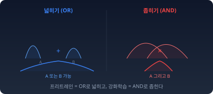
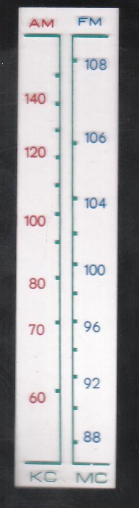
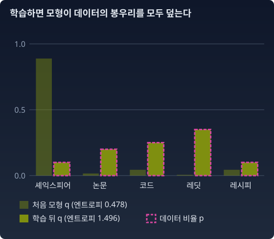
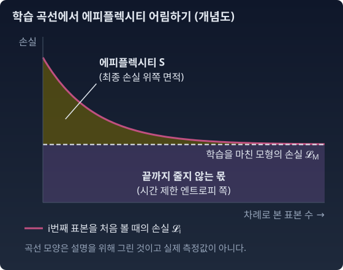

넓히기와 좁히기
같은 언어모델에게 같은 질문을 열 번 해 보면, 대개는 쓸 만한 답이 나오다가도 가끔 엉뚱한 말투, 틀린 계산, 하지 말아야 할 말이 섞여 나온다. 인터넷의 온갖 글을 보고 배운 모델 안에는 좋은 답과 나쁜 답이 함께 들어 있기 때문이다. 넓게 배운 것을 쓸모 있게 좁히는 일은, 모델이 내놓는 분포에게 정확히 무슨 일을 하는 걸까?
분포를 바꾸는 방향은 두 가지다. 프롬프트의 와일드카드 {전투 | 일상 | 로맨스} 는 가능성을 넓히고(OR), 쉼표로 이어 붙인 조건 “존댓말, 세 문장 이내” 는 가능성을 좁힌다(AND). 넓히기는 분포를 섞는 덧셈(혼합)이고, 좁히기는 조건을 곱하는 곱셈이다. 분포의 공간에서 두 방향은 각각 덧셈의 길과 곱셈의 길, m-측지선과 e-측지선이 된다. 측지선은 그 공간에서 가장 곧은 길이고, m(혼합)은 확률을 그대로 섞는 길, e(지수)는 로그 확률을 섞는, 곧 확률을 곱하는 길이다.
이 장에서 그 두 방향이 언어모델 훈련의 실제 단계가 된다.

언어모델이 태어나서 쓸모 있는 존재가 되기까지의 여정 — 프리트레인, SFT(지도 미세조정), 강화학습. 이 단계들은 차례로 한 번씩 지나간다. 그 각 단계가 무엇을 넓히고 무엇을 좁히는지, 그리고 그 넓힘과 좁힘이 분포의 공간에서 어떤 길인지를 이 교재의 도구로 읽을 수 있다.
미리 한 가지를 못 박아 둔다. 이 장에서 기하학을 읽는 곳은 신경망의 파라미터 공간이 아니라 출력 분포의 공간이다. 수십억 개의 가중치는 θ 좌표도 η 좌표도 아니다. log p = θ·t(x) − F(θ) 꼴의 분포 모임(지수족)에는 θ(자연모수. 모수는 분포를 정하는 숫자)와 η(통계량 t의 평균, 기대모수)라는 두 좌표가 있고, 둘은 한쪽이 정해지면 다른 쪽이 정해지는 짝(쌍대 좌표)이다. 이런 좌표는 지수족 위에서만 정의된다. 언어모델의 가중치 공간에는 그런 좌표가 없다. 그래서 “파라미터가 η 직선을 따라 걷는다” 같은 말은 하지 않는다. 대신 모델이 내놓는 분포 π(y) 가 어디로 가는지를 본다. 강화학습에서는 답을 내는 모델을 정책(policy)이라 부르고 그 분포를 π로 적는 것이 관습이라 이 장도 그렇게 적는다. 원주율 π 와는 글자만 같다.
프리트레인: 교차엔트로피는 넓게 덮는 m-사영
“GPT가 셰익스피어처럼 쓸 수도 있고 레딧 댓글처럼 쓸 수도 있고 논문처럼 쓸 수도 있는 이유는 무엇인가? 이 세 능력이 어떻게 한 모델 안에 공존하는가?”
비유
라디오의 전 주파수대 스캔 —

라디오를 처음 켜면 아무 방송도 안 잡힌다. 전 주파수대를 스캔한다. AM, FM, 단파, 장파 — 모든 주파수를 훑는다. 클래식 방송도 잡히고, 뉴스도 잡히고, 외국어 방송도 잡히고, 잡음도 잡힌다. 스캔이 끝나면 라디오는 “어디에 뭐가 있는지” 안다. 아직 어떤 방송을 들을지 정하지 않았다. 모든 채널이 프리셋에 저장되어 있다.
프리트레인이 이것이다. 인터넷의 모든 텍스트를 본다. 셰익스피어도 보고, 레딧도 보고, 논문도 보고, 레시피도 본다. 각 데이터가 하나의 방송국이다. 모델은 이 모든 방송국의 위치를 파라미터 안에 기록한다.
와일드카드로 쓰면
이것은 와일드카드(프롬프트에 {A | B | C} 처럼 적어 두면 그 가운데 하나를 무작위로 골라 쓰게 하는 표기)다. {셰익스피어 | 레딧 | 논문 | 레시피 | 코드 | 시 | 법률문서 | …} 가능성을 넓히는 방향. 혼합. OR.
교재 도구와의 연결
프리트레인의 손실은 다음 토큰의 교차엔트로피다. 교차엔트로피는 엔트로피(분포의 평균 놀라움)와 KL 발산(두 분포가 같은 사건에 매기는 확률이 얼마나 다른지 재는 양)으로 쪼개진다.
H(p) 는 모형이 어쩔 수 없는 상수다. 그러니 교차엔트로피를 줄이는 것은 KL(p‖q) 를 줄이는 것과 같다. KL(p‖q) 는 현실 p의 눈으로 본 지도 q의 부정확함이다. 모형이 될 수 있는 분포들(모형족) 가운데 KL(p‖q) 가 가장 작은 q 를 고르는 일을 m-사영이라 부른다. 최대우도 추정(MLE, 모형이 데이터에 주는 확률을 가장 크게 하는 추정)이 바로 데이터의 경험분포(모은 표본 하나하나에 같은 확률을 준 분포)를 모형족으로 m-사영하는 일이다.
평균을 내는 무게가 p 쪽에 있다. 그래서 데이터에 조금이라도 있는 것을 모형이 0에 가깝게 두면 큰 벌점을 받는다. 빠뜨리는 것을 싫어하는 사영. 데이터가 여러 봉우리를 가지면, 모형은 봉우리를 모두 덮으려 한다.

분포는 심플렉스(합이 1인 확률들이 사는 삼각형) 위의 점이다. 데이터가 넓게 퍼져 있으면, 그 m-사영도 넓게 퍼진 곳에 앉는다. 어느 한 꼭짓점(하나의 확정된 답)에 치우치지 않는 점. 넓음은 사영의 방향이 만드는 것이 아니라 데이터가 넓어서 생긴다는 것을 기억해 두자. 다음 절에서 이 구분이 중요해진다.
파이썬
다섯 방송국의 비율 p 를 가진 데이터에, 처음에는 셰익스피어에 쏠린 모형을 교차엔트로피로 학습시킨다. 로짓에 대한 교차엔트로피의 기울기는 q − p 다.
import numpy as np
names = ["셰익스피어", "논문", "코드", "레딧", "레시피"]
p = np.array([0.10, 0.20, 0.25, 0.35, 0.10]) # 데이터 속 비율 (현실 p)
z = np.array([3.0, -1.0, 0.0, -2.0, 0.0]) # 처음 모형의 로짓: 셰익스피어에 쏠림
def softmax(z):
e = np.exp(z - z.max()); return e / e.sum()
H = lambda q: -np.sum(q * np.log(q))
for step in range(301):
q = softmax(z)
ce = -np.sum(p * np.log(q)) # 교차엔트로피 = H(p) + KL(p‖q)
if step in (0, 30, 300):
print(f"{step:3d} q={np.round(q, 3)} CE={ce:.3f} KL={ce - H(p):.4f} H(q)={H(q):.3f}")
z -= 1.0 * (q - p) # ∂CE/∂z = q − p
print(f"H(p) = {H(p):.3f}")
# 0 q=[0.889 0.016 0.044 0.006 0.044] CE=3.717 KL=2.2210 H(q)=0.478
# 30 q=[0.103 0.198 0.249 0.349 0.101] CE=1.496 KL=0.0001 H(q)=1.500
# 300 q=[0.1 0.2 0.25 0.35 0.1 ] CE=1.496 KL=0.0000 H(q)=1.496
# H(p) = 1.496
한쪽에 쏠려 있던 모형(엔트로피 0.478)이 데이터의 다섯 봉우리를 모두 되살리며 넓어진다(1.496). 교차엔트로피는 H(p) = 1.496 아래로 내려가지 않는다. 남은 몫이 KL이다.
호기심 상자: 에피플렉시티 — 모든 방송이 같은 가치는 아니다
프리트레인이 OR이라면, 무엇을 OR할 것인가?
드문 일이 일어나면 놀랍다. 그 놀라움을 −log(확률)로 재면, 엔트로피는 "평균 놀라움"이다. 그런데 질문이 하나 있다. 누구의 놀라움인가?
섀넌의 정보이론은 계산 능력에 제한이 없는 관찰자를 가정한다. 그런 관찰자에게 의사난수 생성기의 출력은 짧은 시드 하나만큼의 정보밖에 없다 — 시드에서 결정론적으로 나오니까. 그런데 계산 시간이 제한된 관찰자, 예컨대 신경망에게는? 완벽한 노이즈로 보인다. 아무리 학습해도 패턴을 찾을 수 없다.
반대의 사례도 있다. 체스 기보는 규칙에서 나온 결정론적 기록에 가깝지만, 신경망에게는 배울 만한 구조가 가득하다. 수를 하나하나 예측하려면 깊은 전략적 이해가 필요하다.
Marc Finzi, Andrew Gordon Wilson 등은 2026년 1월 논문 "From Entropy to Epiplexity"에서 이 직관을 정의로 만들었다. 시간 제한 T 안에 돌아가는 프로그램(모형)만 쓸 수 있는 관찰자가 데이터를 가장 짧게 적으려 한다고 하자. 적는 길이(description length)는 두 부분이다. 모형 자체를 적는 길이와, 그 모형으로 데이터를 부호화한 길이. 그 합을 최소로 하는 모형이 정해지면, 정보가 두 조각으로 나뉜다.
① 시간 제한 엔트로피(time-bounded entropy) — 가장 좋은 모형으로도 남는 부호화 길이. 그 관찰자에게는 끝까지 노이즈인 부분이다. 의사난수열, 해시값, 암호화된 데이터가 그렇다.
② 에피플렉시티(epiplexity) — 가장 좋은 모형 자체를 적는 길이. 관찰자가 데이터에서 실제로 뽑아낼 수 있는 구조의 양이다.
논문은 의사난수 생성기의 출력이 시간 제한 엔트로피는 거의 최대이면서 에피플렉시티는 거의 상수임을 정리로 보였다.
실용적 측정
논문이 제시한 간단한 추정법은 학습 곡선에서 나온다. 데이터를 차례로 보며 학습할 때 i번째 표본에서의 손실을 𝓛i, 학습이 끝난 모형의 손실을 𝓛M 이라 하면,

학습 곡선 아래 면적 전체가 아니라, 최종 손실보다 위쪽의 면적이다. 최종 손실 아래 깔린 부분은 끝까지 줄지 않는 몫, 곧 시간 제한 엔트로피 쪽이다. 손실이 크게 떨어졌다면 → 배운 구조가 많다 → 에피플렉시티가 크다. 손실이 처음부터 끝까지 그대로면 → 곡선 위쪽 면적이 0 → 배울 구조가 없었다. (논문은 이 방식이 간단하지만 어림셈이라고 밝히고, 교사–학생 모형의 KL을 더하는 더 엄밀한 추정법도 함께 제시한다.)
프리트레인 데이터 선택에 대한 함의
논문은 텍스트 데이터의 에피플렉시티가 이미지 데이터보다 훨씬 크다고 측정했고, 텍스트로 프리트레인한 모델이 더 넓게 전이되는 이유 가운데 하나로 이것을 들었다. 데이터를 고를 때 퍼플렉시티(엔트로피 H의 지수값 eH)가 아니라 배울 수 있는 구조의 양을 기준으로 삼자는 것이 그 제안이다.
우리 식의 예를 하나 들면 이렇다. 랜덤 API 키와 설정 파일로 가득한 코드는 엔트로피는 높지만 배울 구조가 적다. 알고리즘의 내부 작동을 보여 주는 잘 짜인 코드는 엔트로피는 적당하지만 배울 구조가 많다.
−log가 재는 놀라움에는 두 종류가 있는 셈이다. 배울 수 있는 놀라움과 배울 수 없는 놀라움. 프리트레인이 OR을 할 때, 배울 수 있는 놀라움을 많이 품은 데이터를 고르는 것이 현명하다.
수확
“프리트레인은 OR이다. 교차엔트로피는 KL(p‖q), 곧 m-사영이다. 데이터가 넓으니 모형도 넓어진다. 모든 봉우리를 살려두는 사영.”
“같은 엔트로피라도 모든 정보가 같은 가치는 아니다. 계산이 제한된 관찰자에게는 학습 가능한 구조(에피플렉시티)와 학습 불가능한 잡음(시간 제한 엔트로피)이 구분된다. 에피플렉시티는 학습 곡선에서 최종 손실 위쪽의 면적으로 어림할 수 있다.”
문제 1. 날씨 예보관의 로그 점수
지난 30일 동안 맑음 18일, 흐림 9일, 비 3일이었다. 예보관 셋은 날마다 같은 확률을 냈다. A 는 (맑음, 흐림, 비) = (0.9, 0.1, 0), B 는 (0.5, 0.3, 0.2), C 는 (0.6, 0.3, 0.1) 이다. 날마다 실제로 온 날씨에 예보관이 준 확률의 log(자연로그)를 그날의 점수로 매기고, 30일 평균을 낸다. 클수록 좋은 점수다. (가) 세 예보관의 평균 점수를 구하라. (나) 가장 좋은 점수는 어떤 예보에서 나오는가? 평균 점수에 −1 을 곱하면 무엇이 되는가?
함께 풀기

A 가 제일 낫죠. 30일 중 맑은 날이 18일인데 거기에 0.9 를 줬으니까, 맑은 날마다 log 0.9 = −0.105 로 점수가 거의 안 깎여요.

비 온 사흘 동안 A 는 몇 점을 받았죠?

비에 0 을 줬으니까 log 0… 음의 무한대예요. 사흘만 그래도 평균이 통째로 −∞ 가 되네요.

B 는 0.6·log 0.5 + 0.3·log 0.3 + 0.1·log 0.2 = −0.938, C 는 0.6·log 0.6 + 0.3·log 0.3 + 0.1·log 0.1 = −0.898. C 가 B 보다 나아.
C 의 확률은 어디서 본 숫자예요?

지난 30일의 비율 18/30, 9/30, 3/30 그대로네요. 평균 점수에 −1 을 곱하면 −Σ p log q, 날씨 비율 p 에 대한 예보 q 의 교차엔트로피예요. 그래서 가장 좋은 예보는 q = p 이고, 그때 점수가 −H(p) = −0.898 이에요.
그래요. 그러면 이 점수가 가장 싫어하는 예보는 어떤 예보죠?
실제로 일어난 일에 0 을 준 예보요. 조금씩 자주 틀리는 것보다 한 번이라도 "절대 안 와요"라고 했다가 오는 게 치명적이에요. 조교가 "과제 마감은 절대 안 미뤄진다"고 공지했다가 한 번 미루면, 그 뒤로는 아무도 공지를 안 믿는 것처럼요.
문제 2. 셰익스피어를 빠뜨린 모형
위 파이썬의 다섯 방송국 데이터 p = (0.10, 0.20, 0.25, 0.35, 0.10) 에 두 모형을 견준다. 모형 A 는 셰익스피어에 0.001 만 주고, 모형 B 는 0.199 를 준다. 둘 다 남은 확률은 나머지 네 방송국에 데이터 비율대로 나눠 준다. 셰익스피어 확률이 데이터(0.10)에서 어긋난 크기는 둘 다 0.099 다. (가) 두 모형의 KL(p‖q) 를 구하라. (나) 프리트레인 손실은 어느 모형을 더 싫어하는가? 그 까닭을 식에서 평균을 내는 무게로 설명하라.
함께 풀기
셰익스피어는 데이터의 10% 뿐이니까 A 가 덜 손해일 것 같아요. B 는 셰익스피어에 더 주느라 나머지 네 방송국을 다 깎잖아요. 깎이는 쪽이 90% 니까 B 가 더 아프겠죠.
계산해서 확인해 봐요.
A 는 셰익스피어 항이 0.10·log(0.10/0.001) = 0.461 이고, 나머지 네 항은 모두 log(0.9/0.999) 꼴이라 합이 0.9 × (−0.104) = −0.094 예요. 더하면 0.367 이요.

B 는 셰익스피어 항이 0.10·log(0.10/0.199) = −0.069, 나머지가 0.9·log(0.9/0.801) = 0.105, 합해서 0.036. A 가 열 배나 커요. 어긋난 크기는 똑같은데요?
log 안의 비율을 봐. A 는 0.10/0.001 = 100 배, B 는 0.10/0.199 ≈ 0.5 배야. 확률을 더하고 빼는 크기가 같아도, log 는 비율로 재니까 0 근처로 깎을 때 훨씬 커져.
그 log 항 앞에 붙은 무게는 무엇이죠?
p 예요. 데이터에 10% 나 있는 셰익스피어가 무게 0.10 으로 그 큰 log 를 끌고 들어와요. 데이터에 있는 것을 빠뜨린 벌점이에요.
아까 날씨 예보랑 같네요. 비에 0 을 준 예보관이 −∞ 를 받았듯이, 셰익스피어를 0 쪽으로 깎을수록 벌점이 끝없이 커져요. 그래서 이 사영은 데이터에 있는 봉우리를 하나도 빠뜨리지 않으려 하는 거예요.
프리트레인한 모델이 드문 장르도 조금씩은 다 흉내 내는 게 그래서구나. 시험 범위 열 단원 가운데 한 단원을 아예 안 보면 그 단원 문제는 0점이지만, 조금씩이라도 다 보면 어디서든 부분 점수는 나오는 거랑 같네요.